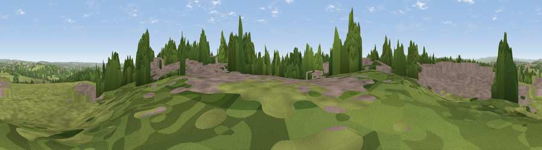

Westgate Hill
#21136 in England · top 31% of its area beats it · near BirkenshawThe view, rendered

A 360° render of this exact spot computed from the terrain model, tree cover and land cover — summer colours, afternoon light, calibrated against photographs of famous viewpoints. Real trees, hedges and buildings will differ in detail.
The panorama
Grey silhouette: terrain skyline in each direction (720 bearings, Earth curvature and refraction included). Dashed green: skyline with trees (+15 m) and buildings (+8 m) as obstacles. Blue strip: how far the ground is visible on each bearing.
Where the view opens
Wedge length = distance to the farthest visible ground on that bearing (vegetation-aware). Rings at 10, 25 and 50 km.
What fills the view
48% grassland · 31% built-up · 20% woodland · 1% cropland
Angular shares of the visible panorama (visual magnitude), not map area. Landscape diversity 0.47 (0–1 Shannon).
Key numbers
More beautiful places nearby
The staircase of upgrades: each row has a higher view potential than everything closer. Driving times are estimates from straight-line distance, calibrated against real road routing — check an actual route before setting out.
| Place | Direction | Drive | Score |
|---|---|---|---|
| Viewpoint near Pudsey | NNE · 4 km | ~10 min | 52.2 |
| Viewpoint near Birstall | SSE · 5 km | ~10 min | 54.2 |
| Viewpoint near Heckmondwike | SSE · 7 km | ~14 min | 57.6 |
| Viewpoint near Shelf | W · 7 km | ~14 min | 59.5 |
| Viewpoint near Woodkirk | SE · 7 km | ~14 min | 62.1 |
| Viewpoint near Queensbury | W · 8 km | ~17 min | 66.8 |
| Rawdon Billing | N · 10 km | ~20 min | 73.0 |
| Viewpoint near Otley | N · 15 km | ~26 min | 77.5 |
53.76259, -1.69544 · source: dobih hill · position refined by local search. Computed location — check access rights before visiting.